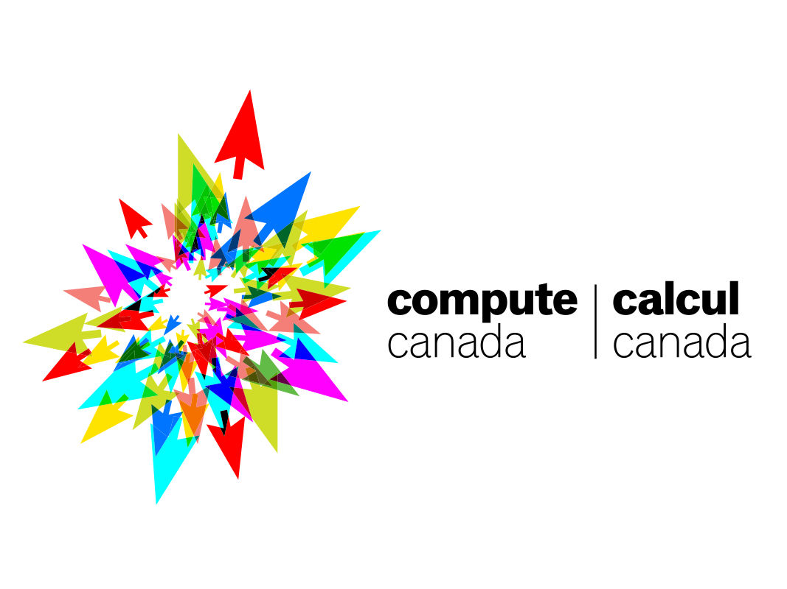
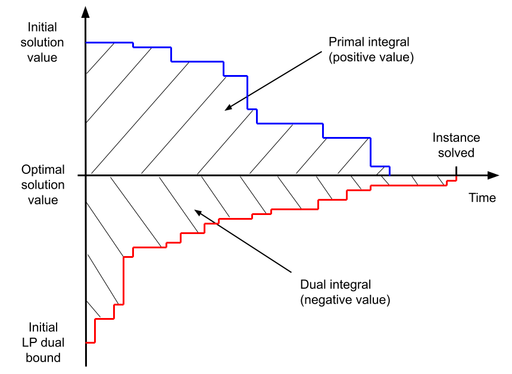

Introduction
The Machine Learning for Combinatorial Optimization (ML4CO) NeurIPS 2021 competition aims at improving state-of-the-art combinatorial optimization solvers by replacing key heuristic components with machine learning models. The competition's main scientific question is the following: is machine learning a viable option for improving traditional combinatorial optimization solvers on specific problem distributions, when historical data is available ?
While most combinatorial optimization solvers are presented as general-purpose, one-size-fits-all algorithms, the ML4CO competition focuses on the design of application-specific algorithms from historical data. This general problem captures a highly practical scenario relevant to many application areas, where a practitioner repeatedly solves problem instances from a specific distribution, with redundant patterns and characteristics. For example, managing a large-scale energy distribution network requires solving very similar CO problems on a daily basis, with a fixed power grid structure while only the demand changes over time. This change of demand is hard to capture by hand-engineered expert rules, and ML-enhanced approaches offer a possible solution to detect typical patterns in the demand history. Other examples include crew scheduling problems that have to be solved daily or weekly with minor variations, or vehicle routing where the traffic conditions change over time, but the overall transportation network does not.
The competition features three challenges for ML, each corresponding to a specific control task arising in the open-source solver SCIP, and exposed through a unified OpenAI-gym API based on the Python library Ecole. For each challenge, participants will be evaluated on three problem benchmarks originating from diverse application areas, each represented as a collection of mixed-integer linear program (MILP) instances. Benchmark-specific submissions are encouraged (algorithms or trained ML models), but of course generic submissions that work for all three benchmarks are allowed.
Note: while we encourage solutions derived from the machine learning and reinforcement learning paradigms, any algorithmic solution respecting the competition's API is accepted.
Important dates (anywhere on earth time zone):
- Jul 1st '21 - competition start, release of the training datasets
- Oct 21st '21 - registration deadline, no new team is accepted past this date
- Oct 28th '21 - submission deadline, no submission is accepted past this date
- Nov 21st '21 - final result announcement and declaration of the winners
- Dec 10th '21 - virtual event at NeurIPS with poster session for all participants
- February '22 - official report with winner contributions, to be published in PMLR
This event is sponsored by the Artificial Intelligence Journal (AIJ), as well as Compute Canada, Calcul Québec and Westgrid who graciously provide the infrastructure and compute ressources to run the competition.

Challenges
We propose three distinct challenges, each corresponding to a specific control task arising in traditional solvers. Participants can compete in any subset of those challenges, and one winner will be declared for each.
-
Primal task
Produce feasible solutions, in order to minimize the primal integral over time.
-
Dual task
Select branching variables, in order to minimize dual the dual integral over time.
-
Configuration task
Choose the best solver parameters, in order to minimize the primal-dual integral over time.

Primal and dual bounds evolution vs solving time
(for a minimization MILP instance).
Note that this figure
shows the primal and dual integrals minus
\(T\mathbf{c}^\top \mathbf{x}^\star\), which takes a
constant value for a particular instance.
Primal task - Finding feasible solutions
The primal task deals with finding good primal solutions at the root node of the branch-and-bound tree. To that end, the environment (SCIP solver) will not perform any branching but will enter an infinite loop at the root node, which will collect the agent's solutions, evaluate their feasibility, and update the overall best solution reached so far, thus lowering the current primal bound (upper bound). The metric of interest for this task is the primal integral, which takes into account the speed at which the primal bound decreases over time. To model a realistic scenario, each problem instance will have been preprocessed by SCIP (problem reduction, cutting planes etc.), and the root linear program (LP) relaxation will have been solved before the participants are asked to produce feasible solutions. To prevent SCIP from searching for primal solutions by itself, all primal heuristics will be deactivated. In order to compute this metric unambiguously, even when no solution has been found yet, we provide an initial primal bound (trivial solution value) for each instance, which is to be given to SCIP at the beginning of the solving process in the form of a user objective limit.
- Environment
- The solver is stopped at the root node after the root LP has been solved and enters an infinite loop. At each transition, the environment evaluates the given solution candidate and updates the primal bound. Nothing else happens. The solver remains in the SOLVING stage until the episode terminates (time limit reached, or when the problem is solved).
- Action
- A solution candidate for the current problem (variable assignment values, x).
- Metric
- Primal integral.
- Time limit
- \(T=5\) minutes.
- Relevant literature:
-
- Learning Combinatorial Optimization Algorithms over Graphs , Dai et al., NeurIPS'17
- Reinforcement Learning for Solving the Vehicle Routing Problem , Nazari et al., NeurIPS'18
- Combinatorial Optimization with Graph Convolutional Networks and Guided Tree Search , Li et al., NeurIPS'18
- Solving Mixed Integer Programs Using Neural Networks , Nair et al., 2020
Dual task - Branching
The dual task deals with obtaining tight optimality guarantees (dual bounds) via branching. Making good branching decisions is regarded as a critical component of modern branch-and-bound solvers, yet has received little theoretical understanding to this day (see Lodi et al., 2017). In this task, the environment will run a full-fledged branch-and-cut algorithm with SCIP, and the participants will only control the solver's branching decisions. The metric of interest is the dual integral, which considers the speed at which the dual bound increases over time. Also, all primal heuristics will be deactivated, so that the focus is only on proving optimality via branching.
- Environment
- Traditional branch-and-bound algorithm. The solver stops after each node is processed (LP solved), receives a branching decision, performs branching, and selects the next open node to process. The solver remains in the SOLVING stage until the episode terminates (time limit reached, or when the problem is solved).
- Action
- One of the current node's branching candidates (non-fixed integer variables). Only single-variable branching is allowed.
- Metric
- Dual integral.
- Time limit
- \(T=15\) minutes.
- Relevant literature:
-
- Learning to Branch in Mixed Integer Programming , Khalil et al., AAAI'16
- On Learning and Branching: a Survey , Lodi et al., TOP, 2017
- Learning to Branch , Balcan et al., ICML'18
- Exact Combinatorial Optimization with Graph Convolutional Neural Networks , Gasse et al., NeurIPS'19
- Hybrid Models for Learning to Branch , Gupta et al., NeurIPS'20
- Solving Mixed Integer Programs Using Neural Networks , Nair et al., 2020
Configuration task - Choosing solver parameters
The configuration task deals with deciding on a good parameterization of the solver for a given problem instance. The environment required for this task is more straightforward than for the two previous ones since it involves only a single decision for the agents (i.e., contextual bandit problem). Participants are allowed to tune any of the existing parameters of SCIP (except parameters regarding the computation of time). They can choose between providing a fixed set of parameters that work well on average for each problem benchmark or producing instance-specific parameterizations based on each instance's characteristics. The metric of interest for this task is the primal-dual gap integral, which combines both improvements from the dual and from the primal side over time. In order to compute this metric unambiguously, even when no primal or dual bound exists, we provide both an initial primal bound (trivial solution value) and an initial dual bound (pre-computed root LP solution value) for each instance.
- Environment
- The solver loads a problem instance and immediately stops. It then receives a parameterization, applies it, and pursues with the solving process until it terminates (time limit reached, or when the problem is solved). During the first and only transition, the solver is in the PROBLEM stage. As such, participants will not be able to extract advanced features from the solver, such as those relying on the LP being solved.
- Action
- A set of SCIP parameters, in the form of a key/value dictionary.
- Metric
- Primal-dual gap integral.
- Time limit
- \(T=15\) minutes.
- Relevant literature
-
- Sequential model-based optimization for general algorithm configuration , Hutter et al., LION'11
Metrics
Each of the three challenges, the primal task, the dual task and the configuration task, is associated with a specific evaluation metric that reflects a different objective. Here we describe how each metric is computed over a single problem instance, while the final goal of the participants is to optimize this metric in expectation over a hidden collection of test instances.
Because our evaluation metrics are time-dependent, all evaluations will be run on the same hardware setup, including one CPU core and one GPU card, which will be communicated at the start of the competition. For practical reasons, for each task, a maximum time budget \(T\) is given to process each test instance (5, 15 and 15 minutes respectively for the primal, dual and configuration tasks), after which the environment necessarily terminates. Participants should therefore focus on taking both good and fast decisions.
In the following we consider instances of mixed-integer linear programs (MILPs) expressed as follows: \[ \begin{eqnarray} \underset{\mathbf{x}}{\operatorname{arg\,min}} \quad \mathbf{c}^\top\mathbf{x} && \\ \text{subject to} \quad \mathbf{A}^\top\mathbf{x} & \leq & \mathbf{b} \text{,} \\ \mathbf{x} & \in & \mathbb{Z}^p \times \mathbb{R}^{n-p} \text{,} \end{eqnarray} \] where \(\mathbf{c} \in \mathbb{R}^n\) denotes the coefficients of the linear objective, \(\mathbf{A} \in \mathbb{R}^{m \times n}\) and \(\mathbf{b} \in \mathbb{R}^m\) respectively denote the coefficients and upper bounds of the linear constraints, while \(n\) is the total number of variables, \(p \leq n\) is the number of integer-constrained variables, and \(m\) the number of linear constraints.
- Primal integral
-
This objective measures the area under the curve of the solver's primal bound (a.k.a. global upper bound), which corresponds to the value of the best feasible solution found so far. By providing better feasible solutions over time, the value of the primal bound decreases. With a time limit \(T\), the primal integral expresses as: \[ \int_{t=0}^{T} \mathbf{c}^\top \mathbf{x}^\star_t\;\mathrm{d}t - T\mathbf{c}^\top\mathbf{x}^\star \text{,} \] where \(\mathbf{x}^\star_t\) is the best feasible solution found at time \(t\) (so that \(\mathbf{c}^\top \mathbf{x}^\star_t\) is the primal bound at time \(t\)), and \(T\mathbf{c}^\top\mathbf{x}^\star\) is an instance-specific constant that depends on the optimal solution \(\mathbf{x}^\star\). The primal integral is to be minimized, and takes an optimal value of 0.
Note: to compute this metric unambiguously, a trivial initial solution \(x^\star_0\) is always provided to SCIP at the beginning of the solving process. Also, the constant term \(\mathbf{c}^\top\mathbf{x}^\star\) can be safely ignored at training time when participants train their control policy, as the learning problem is equivalent. At test time however, when we will evaluate the participant submissions, this constant term (or a proper substitute) will be incorporated in the reported metric.
- Dual integral
-
This objective measures the area over the curve of the solver's dual bound (a.k.a. global lower bound), which usually corresponds to a solution of a valid relaxation of the MILP. By branching, the LP relaxations corresponding to the branch-and-bound tree leaves get tightened, and the dual bound increases over time. With a time limit \(T\), the dual integral expresses as: \[ T\mathbf{c}^\top\mathbf{x}^\star - \int_{t=0}^{T} \mathbf{z}^\star_t\;\mathrm{d}t \text{,} \] where \(\mathbf{z}^\star_t\) is the best dual bound at time \(t\), and \(T\mathbf{c}^\top\mathbf{x}^\star\) is an instance-specific constant that depends on the optimal solution value \(\mathbf{c}^\top\mathbf{x}^\star\). The dual integral is to be minimized, and takes an optimal value of 0.
Note: in the context of branching, this metric is unambiguous to compute, as the root node of the tree always provides an initial dual bound \(\mathbf{z}^*_0\) at the beginning of branching. Here again, the constant term \(\mathbf{c}^\top\mathbf{x}^\star\) can be safely ignored for training, but it will be incorporated (or a proper substitute) in the metrics that we will report when evaluating the participants submissions.
- Primal-dual gap integral
-
This objective measures the area between two curves, the solver's primal bound and the solver's dual bound. As such, this metric benefits both from improvements obtained from the primal side (finding good feasible solutions), and on the dual side (producing a tight optimality certificate). With a time limit \(T\), the primal-dual gap integral expresses as: \[ \int_{t=0}^{T} \mathbf{c}^\top \mathbf{x}^\star_t - \mathbf{z}^\star_t\;\mathrm{d}t \text{.} \] The primal-dual gap integral is to be minimized, and take an optimal value of 0.
Note: in the context of algorithm configuration, an initial value is required for the two curves at time \(t=0\). Therefore we always provide both an initial trivial solution \(x^\star_0\) and a valid initial dual bound \(z^\star_0\) to SCIP for this task.
Datasets
For each individual challenge, participants will be evaluated on three problem benchmarks from diverse application areas. Participants can provide a different decision-making code (algorithmic solution or trained ML model) for each of the benchmarks, or a single code that works for all benchmarks.
A problem benchmark consists in a collection of mixed-integer linear program (MILP) instances in the standard MPS file format. Each benchmark is split into a training and a test set, originating from the same problem distribution. While the training instances are made public at the beginning of the competition for participants to train their models, the test instances will be kept hidden for evaluation purposes and will only be revealed at the end of the competition.
Note: for each problem benchmark we suggest a pre-established split of the training instances into two distinct collections: train and valid. This is only a suggestion, and all instance files in both those collections can be likely considered as training instances. There is no restriction regarding how participants should use the provided instances during training.
The first two problem benchmarks are inspired by real-life applications of large-scale systems at Google, while the third benchmark is an anonymous problem inspired by a real-world, large-scale industrial application.
- Problem benchmark 1: Balanced Item Placement
- This problem deals with spreading items (e.g., files or processes) across containers (e.g., disks or machines) utilizing them evenly. Items can have multiple copies, but at most, one copy can be placed in a single bin. The number of items that can be moved is constrained, modeling the real-life situation of a live system for which some placement already exists. Each problem instance is modeled as a MILP, using a multi-dimensional multi-knapsack formulation. This dataset contains 10000 training instances (pre-split into 9900 train and 100 valid instances).
- Problem benchmark 2: Workload Apportionment
- This problem deals with apportioning workloads (e.g., data streams) across as few workers (e.g., servers) as possible. The apportionment is required to be robust to any one worker's failure. Each instance problem is modeled as a MILP, using a bin-packing with apportionment formulation. This dataset contains 10000 training instances (pre-split into 9900 train and 100 valid instances).
- Problem benchmark 3: Anonymous Problem
- The MILP instances corresponding to this benchmark are assembled from a public dataset, whose origin is kept secret to prevent cheating. Reverse-engineering for the purpose of recovering the test set is explicitly forbidden (see rules). This dataset contains 118 training instances (pre-split into 98 train and 20 valid instances).
Rules
The spirit of the competition is as follows:
- we encourage contributions from both the OR and ML communities by explicitly allowing non-ML submissions;
- we encourage student participation with a dedicated student leaderboard;
- we encourage original contributions by specifically making the use of highly-engineered commercial solvers prohibited.
Participants must adhere to the following rules:
- Eligibility
-
- Participants can work in teams.
- Participants can submit codes based on a machine learning model, a human-designed algorithm, or any combination of the two.
- Participants are not allowed to use commercial software in their code. The use of solvers such as CPLEX, Gurobi, or FICO XPress is explicitly forbidden.
- Student-only teams are eligible to a separate student leaderboard, in addition to the main leaderboard of the competition. A graduated PhD is not considered a student.
- Data
-
- The use of supplementary existing open-source datasets, e.g., for pre-training, is permitted provided they are credited.
- The use of private, proprietary datasets is not permitted.
- In order to prevent cheating, the evaluation data sets will be kept hidden to the participants during the competition.
- Participants are free and encouraged to extract original features from the solver for training and evaluation, though the Python interface of SCIP, PySCIPOpt.
- Submission
-
- The submitted codes must be written in Python, and must run in the evaluation environment which we provide.
- Parallel implementations using multiple processes or multiple threads are allowed, although the hardware on which the codes will be evaluated is single-core.
- The evaluation environment does not have access to any external network, to prevent any information leak.
- Users may make use of open source libraries given proper attribution. At the end of the competition, we encourage all code to be open-sourced so the results can be reproduced.
- The evaluation environment will provide a basic ML ecosystem (Tensorflow, Pytorch, Scikit-learn). Additional libraries will be added to the evaluation environment upon reasonable requests.
- At the end of the competition, the winners are expected to provide a description of the method they used.
- Cheating prevention
-
- Participants are forbidden to interact with the SCIP solver in any other way than the one intended, that is, extracting information or providing a control decision related to the task at hand. Any interaction with SCIP that results in changes of the solver's internal state will be considered cheating.
- Some datasets have been anonymized, as they rely on publicly accessible data. Any attempt at reverse-engineering for the purpose of recovering information about the test set is forbidden.
- Any instance of cheating, defined as violation of the rules above or any other attempt to circumvent the spirit and intent of the competition, as determined by the organizers, will result in the invalidation of all of the offending team’s submissions and a disqualification from the competition.
For each task, the winners will be declared as follows:
- Ranking rules
-
- Each team will be evaluated separately on each of the three benchmark datasets according the task's metric, i.e., primal integral, dual integral, or primal-dual integral. This metric will be averaged across all instances in the test dataset, resulting in an individual ranking for each dataset. For example, for the primal task, team A might obtain ranks 3, 8, 1 respectively in the three problem benchmark, while team B obtains ranks 2, 2, 15.
- Then, for each team those three ranks will be multiplied together to obtain the overall score of the team. For example, team A will obtain a score of 3x8x1=24 while team B obtains 2x2x15=60.
- The team with the lowest overall score wins.
Getting started
Registration form: register your team and subscribe to the competition's mailing list.
GitHub repository: get started and access the datasets, started packages, and technical documentation.
Leaderboard
Last update: October 25th.
Note: for each challenge and each benchmark, we report two performance measures:
- the average evaluation metric (primal integral, dual integral, or primal-dual integral) obtained over the test instances, which is to be minimized. This measure is described in detail in the metrics section, and corresponds to the negated cumulated reward computed by our evaluation script, plus a constant term (\(T\mathbf{c}^\top\mathbf{x}^\star\), \(-T\mathbf{c}^\top\mathbf{x}^\star\) or \(0\)) that depends on the optimal solution value of each instance. Because for some instances it is hard to obtain the optimal solution value, and because this constant term is the same for every participant and does not impact the rankings, we compute an adequate estimate to substitute \(\mathbf{c}^\top\mathbf{x}^\star\) when the optimal solution value is not available, based on the best primal and dual bounds obtained after some time limit.
- the average cumulated reward (cum. reward) obtained over the test instances, which is to be maximized. We report this measure for information purposes, as it is exactly the one computed by our evaluation script. This measure can be interpreted as the negated and unshifted version of the evaluation metric (it does not depend on \(\mathbf{c}^\top\mathbf{x}^\star\)), and it produces the exact same ranking.
Global leaderboard
Primal task| rank | team | item_placement | load_balancing | anonymous | score | ||||||
|---|---|---|---|---|---|---|---|---|---|---|---|
| primal integral | (cum. reward) | rank | primal integral | (cum. reward) | rank | primal integral | (cum. reward) | rank | |||
| 1 | CUHKSZ_ATD | 482.74 | (-3568.73) | 1 | 1381.17 | (-215123.67) | 1 | 118434214.92 | (-140755503.94) | 1 | 1 |
| 2 | MDO | 1743.97 | (-4829.96) | 2 | 4809.33 | (-218551.83) | 2 | 363432889.44 | (-385754178.46) | 4 | 16 |
| 3 | EI-OROAS | 1849.09 | (-4935.08) | 3 | 5944.48 | (-219686.98) | 4 | 328583926.11 | (-350905215.13) | 3 | 36 |
| 4 | UNIST-LIM-Lab | 3711.29 | (-6797.28) | 5 | 5000.58 | (-218743.08) | 3 | 390828725.99 | (-413150015.01) | 5 | 75 |
| 5 | Mr_Tree | 3732.71 | (-6818.70) | 6 | 9170.42 | (-222912.92) | 9 | 292115828.78 | (-314437117.80) | 2 | 108 |
| 6 | generaleyes | 3130.29 | (-6216.28) | 4 | 6287.19 | (-220029.69) | 5 | 393888562.80 | (-416209851.82) | 6 | 120 |
| 7 | Nuri | 3981.06 | (-7067.05) | 8 | 9198.24 | (-222940.74) | 10 | 394002570.32 | (-416323859.35) | 7 | 560 |
| 8 | MILPandCookies | 21548.08 | (-24634.07) | 10 | 8786.67 | (-222529.17) | 6 | 552121631.58 | (-574442920.60) | 10 | 600 |
| 9 | dt | 3928.18 | (-7014.17) | 7 | 8968.14 | (-222710.64) | 8 | nan | (nan) | 11 | 616 |
| 10 | ethz-scuba | 3999.04 | (-7085.03) | 9 | 8865.19 | (-222607.69) | 7 | nan | (nan) | 11 | 693 |
| 11 | EasyML | 181351.93 | (-184437.92) | 11 | 54345.18 | (-268087.68) | 11 | 552089962.36 | (-574411251.38) | 9 | 1089 |
| 12 | nf-lzg | 181352.07 | (-184438.06) | 12 | 54346.18 | (-268088.68) | 12 | 552061475.56 | (-574382764.58) | 8 | 1152 |
| rank | team | item_placement | load_balancing | anonymous | score | ||||||
|---|---|---|---|---|---|---|---|---|---|---|---|
| dual integral | (cum. reward) | rank | dual integral | (cum. reward) | rank | dual integral | (cum. reward) | rank | |||
| 1 | EI-OROAS | 2599.68 | (6658.29) | 2 | 4923.37 | (636304.13) | 1 | 6687021.77 | (60276845.29) | 2 | 4 |
| 2 | Nuri | 2000.46 | (7257.50) | 1 | 5985.17 | (635242.33) | 9 | 6608564.03 | (60355303.04) | 1 | 9 |
| 3 | KAIST_OSI | 3137.91 | (6120.06) | 8 | 5289.99 | (635937.51) | 2 | 6857363.54 | (60106503.52) | 5 | 80 |
| 4 | EFPP | 2961.88 | (6296.09) | 7 | 5355.82 | (635871.68) | 3 | 7199733.88 | (59764133.18) | 10 | 210 |
| 5 | KEP-UNIST | 4410.81 | (4847.16) | 14 | 6722.39 | (634505.11) | 16 | 6721757.49 | (60242109.58) | 3 | 672 |
| 6 | ark | 2602.02 | (6655.94) | 3 | nan | (nan) | 20 | 7351609.07 | (59612258.00) | 12 | 720 |
| 7 | Superfly | 3580.15 | (5677.81) | 11 | 5870.69 | (635356.81) | 5 | 7373689.54 | (59590177.53) | 14 | 770 |
| 8 | comeon | 3146.27 | (6111.70) | 10 | 5873.36 | (635354.14) | 6 | 7371100.01 | (59592767.05) | 13 | 780 |
| 8 | qqy | 2626.06 | (6631.91) | 4 | 6358.11 | (634869.39) | 13 | 7427916.15 | (59535950.92) | 15 | 780 |
| 10 | null_ | 4227.63 | (5030.33) | 13 | 6828.34 | (634399.16) | 17 | 6778210.71 | (60185656.35) | 4 | 884 |
| 11 | Monkey | 3143.99 | (6113.98) | 9 | 5874.78 | (635352.72) | 7 | 7442282.46 | (59521584.60) | 16 | 1008 |
| 12 | DaShun | 4574.57 | (4683.39) | 15 | 5651.65 | (635575.85) | 4 | 7728782.47 | (59235084.59) | 19 | 1140 |
| 13 | lxj24 | 2771.15 | (6486.81) | 5 | 6156.38 | (635071.12) | 12 | nan | (nan) | 22 | 1320 |
| 14 | blueterrier | 4914.72 | (4343.25) | 19 | 5943.91 | (635283.59) | 8 | 7254109.15 | (59709757.91) | 11 | 1672 |
| 15 | Columbia_Combinators | 4807.43 | (4450.54) | 17 | 6520.23 | (634707.27) | 14 | 7123239.10 | (59840627.96) | 9 | 2142 |
| 16 | CUHKSZ_ATD | 3908.24 | (5349.73) | 12 | 6096.30 | (635131.20) | 11 | 7658779.53 | (59305087.53) | 18 | 2376 |
| 17 | nf-lzg | 2904.22 | (6353.75) | 6 | nan | (nan) | 20 | 7778222.64 | (59185644.43) | 20 | 2400 |
| 18 | sylvia | nan | (nan) | 21 | nan | (nan) | 20 | 6919980.50 | (60043886.57) | 6 | 2520 |
| 19 | wanghaha | nan | (nan) | 21 | nan | (nan) | 20 | 7003051.22 | (59960815.84) | 7 | 2940 |
| 20 | gentlemenML4CO | 4746.05 | (4511.92) | 16 | 5989.40 | (635238.10) | 10 | 7850579.24 | (59113287.82) | 21 | 3360 |
| 20 | shg | nan | (nan) | 21 | nan | (nan) | 20 | 7015129.48 | (59948737.59) | 8 | 3360 |
| 22 | uofx | 4853.54 | (4404.43) | 18 | 6641.06 | (634586.44) | 15 | 7584830.04 | (59379037.03) | 17 | 4590 |
| rank | team | item_placement | load_balancing | anonymous | score | ||||||
|---|---|---|---|---|---|---|---|---|---|---|---|
| primal-dual integral | (cum. reward) | rank | primal-dual integral | (cum. reward) | rank | primal-dual integral | (cum. reward) | rank | |||
| 1 | EI-OROAS | 8471.53 | (-8471.53) | 1 | 8178.87 | (-8178.87) | 1 | 655486373.65 | (-655486373.65) | 1 | 1 |
| 2 | MDO | 13329.48 | (-13329.48) | 2 | 10190.14 | (-10190.14) | 2 | 950443267.46 | (-950443267.46) | 8 | 32 |
| 3 | Cho | 16270.59 | (-16270.59) | 8 | 16558.97 | (-16558.97) | 3 | 774324140.34 | (-774324140.34) | 2 | 48 |
| 4 | MOEA | 14326.17 | (-14326.17) | 7 | 17891.35 | (-17891.35) | 4 | 852892209.76 | (-852892209.76) | 5 | 140 |
| 5 | EasyML | 13446.74 | (-13446.74) | 4 | 29147.65 | (-29147.65) | 9 | 842540799.85 | (-842540799.85) | 4 | 144 |
| 6 | nf-lzg | 13402.54 | (-13402.54) | 3 | 29274.01 | (-29274.01) | 10 | 853782466.40 | (-853782466.40) | 6 | 180 |
| 7 | shg | 17029.34 | (-17029.34) | 9 | 28563.18 | (-28563.18) | 8 | 804463103.72 | (-804463103.72) | 3 | 216 |
| 8 | ECNUNoah001 | 13626.82 | (-13626.82) | 5 | 19532.02 | (-19532.02) | 5 | 961873198.76 | (-961873198.76) | 9 | 225 |
| 9 | null_ | 18102.22 | (-18102.22) | 10 | 20652.77 | (-20652.77) | 6 | 912494325.74 | (-912494325.74) | 7 | 420 |
| 10 | KEP-UNIST | 14208.30 | (-14208.30) | 6 | 25814.58 | (-25814.58) | 7 | nan | (nan) | 12 | 504 |
| 11 | Nuri | 18754.20 | (-18754.20) | 11 | 170775.09 | (-170775.09) | 12 | 1664228632.23 | (-1664228632.23) | 10 | 1320 |
| 12 | MixedInspiringLamePuns | 104335.70 | (-104335.70) | 12 | 33862.18 | (-33862.18) | 11 | 1664379819.97 | (-1664379819.97) | 11 | 1452 |
| 13 | DaShun | nan | (nan) | 13 | nan | (nan) | 13 | nan | (nan) | 12 | 2028 |
Student leaderboard
Primal task| rank | team | item_placement | load_balancing | anonymous | score | ||||||
|---|---|---|---|---|---|---|---|---|---|---|---|
| primal integral | (cum. reward) | rank | primal integral | (cum. reward) | rank | primal integral | (cum. reward) | rank | |||
| 1 | UNIST-LIM-Lab | 3711.29 | (-6797.28) | 1 | 5000.58 | (-218743.08) | 1 | 390828725.99 | (-413150015.01) | 1 | 1 |
| 2 | ethz-scuba | 3999.04 | (-7085.03) | 2 | 8865.19 | (-222607.69) | 2 | nan | (nan) | 4 | 16 |
| 3 | EasyML | 181351.93 | (-184437.92) | 3 | 54345.18 | (-268087.68) | 3 | 552089962.36 | (-574411251.38) | 3 | 27 |
| 4 | nf-lzg | 181352.07 | (-184438.06) | 4 | 54346.18 | (-268088.68) | 4 | 552061475.56 | (-574382764.58) | 2 | 32 |
| rank | team | item_placement | load_balancing | anonymous | score | ||||||
|---|---|---|---|---|---|---|---|---|---|---|---|
| dual integral | (cum. reward) | rank | dual integral | (cum. reward) | rank | dual integral | (cum. reward) | rank | |||
| 1 | KAIST_OSI | 3137.91 | (6120.06) | 5 | 5289.99 | (635937.51) | 1 | 6857363.54 | (60106503.52) | 2 | 10 |
| 2 | null_ | 4227.63 | (5030.33) | 7 | 6828.34 | (634399.16) | 6 | 6778210.71 | (60185656.35) | 1 | 42 |
| 3 | ark | 2602.02 | (6655.94) | 1 | nan | (nan) | 8 | 7351609.07 | (59612258.00) | 6 | 48 |
| 4 | qqy | 2626.06 | (6631.91) | 2 | 6358.11 | (634869.39) | 4 | 7427916.15 | (59535950.92) | 8 | 64 |
| 5 | comeon | 3146.27 | (6111.70) | 6 | 5873.36 | (635354.14) | 2 | 7371100.01 | (59592767.05) | 7 | 84 |
| 6 | lxj24 | 2771.15 | (6486.81) | 3 | 6156.38 | (635071.12) | 3 | nan | (nan) | 10 | 90 |
| 7 | Columbia_Combinators | 4807.43 | (4450.54) | 8 | 6520.23 | (634707.27) | 5 | 7123239.10 | (59840627.96) | 5 | 200 |
| 8 | sylvia | nan | (nan) | 9 | nan | (nan) | 8 | 6919980.50 | (60043886.57) | 3 | 216 |
| 9 | nf-lzg | 2904.22 | (6353.75) | 4 | nan | (nan) | 8 | 7778222.64 | (59185644.43) | 9 | 288 |
| 9 | wanghaha | nan | (nan) | 9 | nan | (nan) | 8 | 7003051.22 | (59960815.84) | 4 | 288 |
| rank | team | item_placement | load_balancing | anonymous | score | ||||||
|---|---|---|---|---|---|---|---|---|---|---|---|
| primal-dual integral | (cum. reward) | rank | primal-dual integral | (cum. reward) | rank | primal-dual integral | (cum. reward) | rank | |||
| 1 | MOEA | 14326.17 | (-14326.17) | 3 | 17891.35 | (-17891.35) | 1 | 852892209.76 | (-852892209.76) | 2 | 6 |
| 1 | EasyML | 13446.74 | (-13446.74) | 2 | 29147.65 | (-29147.65) | 3 | 842540799.85 | (-842540799.85) | 1 | 6 |
| 3 | nf-lzg | 13402.54 | (-13402.54) | 1 | 29274.01 | (-29274.01) | 4 | 853782466.40 | (-853782466.40) | 3 | 12 |
| 4 | null_ | 18102.22 | (-18102.22) | 4 | 20652.77 | (-20652.77) | 2 | 912494325.74 | (-912494325.74) | 4 | 32 |
| 5 | MixedInspiringLamePuns | 104335.70 | (-104335.70) | 5 | 33862.18 | (-33862.18) | 5 | 1664379819.97 | (-1664379819.97) | 5 | 125 |